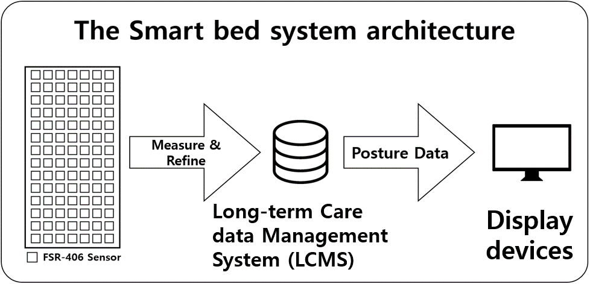
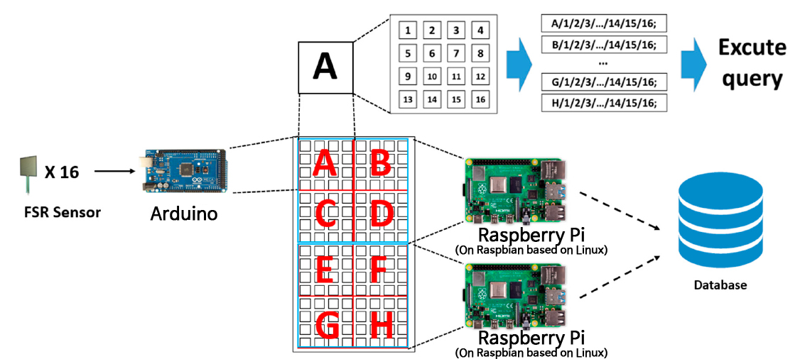
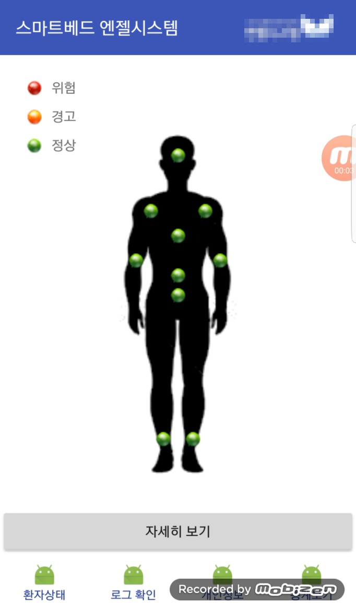
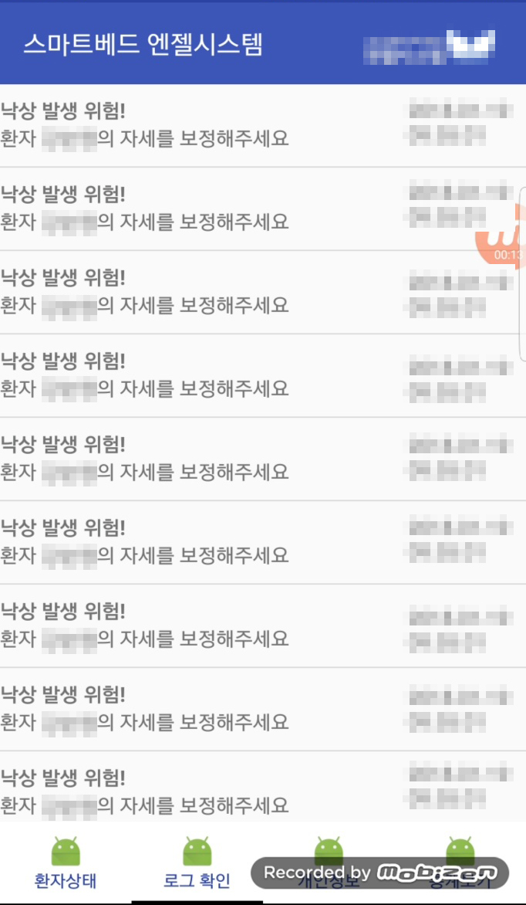

Mobile computing LAB에서 진행한 프로젝트로 3인의 협업으로 진행된 산학협력프로젝트이며 업체는 스마트베드 파트 외에 것을 담당하였고 제가 담당한 파트는 다음과 같습니다.
이 프로젝트에 적용된 기술은 아래와 같습니다.
스마트 베드 프로젝트는 요양원에서 인력부족으로 인해 발생되는 여러 문제를 해결하기 위해 사용자의 자세를 실시간으로 기록하고 모바일 앱으로 조회가 가능하며, 낙상 및 욕창을 방지하는 시스템을 구현하는 것이 목표입니다. 스마트 베드는 128개의 압력센서와 8개의 아두이노 그리고 2개의 라즈베리파이로 구성되어있습니다. 압력센서는 일정한 간격을 가지는 8 * 16의 격자형태로 배치하고 세션을 8개로 나누었고, 각각의 세션은 아두이노가 담당하여 누운 사람의 압력값 데이터를 라즈베리파이로 Serial 통신으로 전송합니다. 큰 시스템의 구성과 흐름 다음과 같습니다.

먼저 스마트 베드는 데이터를 수집하고 SQL로 가공하여 데이터베이스에 저장합니다. 그 후 서버는 최근에 저장된 데이터를 읽어와 자세판정 알고리즘을 수행하고결과를 데이터베이스에 저장합니다. 그 후 사용자는 모바일 디바이스에서 앱을 통해 사용자의 자세를 조회할 수 있습니다.

// 라즈베리파이에서 Serial 통신을 위해 serial을 오픈하는 C코드
void setup()
{
fflush(stdout);
if ((fd3 = serialOpen(device3, baud)) < 0) // 정상적으로 연결된다면 실행되지 않습니다
{
fprintf(stderr, "Unable to open serial device: %s\n", strerror(errno));
exit(1); //error
}
}
// 라즈베리파이에서의 DB Connect 코드
if (!mysql_real_connect(conn, server, user, password, NULL, 3306, NULL, 0)) { //필요한 Parameter들은 상수값으로 선언
printf("connect error.\n");
exit(1);
}
if (mysql_select_db(conn, database) != 0) { // 스키마 선택
mysql_close(conn);
printf("select_db fail.\n");
exit(1);
}
// Serial로부터 데이터 수신
char data[300]; // 최대 300의 사이즈를 수신하기 때문에 변수 선언
for (i = 0; i<300; i++){ // 쓰레기 값이 발생하는걸 방지하기 위해 Null로 초기화
data[i] = '\0';
}
for (i = 0; i<299; i++){
data[i] = serialGetchar(fd1); // 하나씩 읽어들이고 기록
if (data[i] == '/'){ // EOF라면 종료
break;
}
}
excute(data);
// 발송지에 맞게 수신된 데이터를 SQL로 변환하여 실해
if (chk == 'A') { // T라는 이름의 아두이노로 부터의 데이터라면
char head[] = "INSERT INTO a_section VALUES(1, ";
sprintf(temp, "%s%s%s%s%s", head, timeToString(t), head_tail, data_change, endTail); // 이 형태로 SQL로 변환
}
mysql_query(conn, temp); // Excute query스마트 베드는 8개의 아두이노와 상체와 하체를 담당하는 2개의 라즈베리파이가 있습니다. 라즈베리파이 하나당 8개의 아두이노를 관리하고 하나의 아두이노는 16개의 압력센서로 부터 데이터를 수집합니다. 먼저 섹션을 총 8개로 나누고 각 세션별 아두이노는 16개의 압력센서로부터 데이터를 측정합니다. 그 후 자신에게 부여된 태그를 헤더에 담아 Serial 통신을 통해서 라즈베리파이에게 전송합니다. 라즈베리파이는 C언어로 작성된 프로그램을 통해 SQL을 실행하여 데이터베이스에 데이터를 기록하게되는데 Wiring Pi 라이브러리를 활용해 Serial로부터 데이터를 전송받습니다. 그 후 전송받은 데이터를 SQL 형태로 가공하여 MySQL 라이브러리를 사용하여 데이터베이스에 기록합니다.
이렇게 데이터베이스에 저장된 압력값들은 Java로 구현된 자세판정 프로그램에서 자세판정 알고리즘(자세한 내용 보기)을 통해 자세를 판정하여 128개의 압력값과 판정 결과를 JSON 데이터 형식으로 변환하여 업체에서 제공한 REST API에 데이터를 전송하면 업체내의 데이터베이스에 저장하도록 구현하였습니다.
// Java 기반의 JSON 데이터 전송 파트
ArrayList posutreData = new ArrayList<>();
ArrayList posutreChagnedData = new ArrayList<>();
ArrayList posutreChagnedDateData = new ArrayList<>();
JSONObject jsonObject = new JSONObject();
JSONArray jsonArray = new JSONArray(); // 128개의 압력센서값
JSONObject jsonData = new JSONObject(); // 자세 데이터
...
// JSON으로 데이터를 전송하고 결과값을 받아오는 코드
try{
String data = URLEncoder.encode("json_code", "UTF-8") + "=" + URLEncoder.encode(jsonInfo, "UTF-8");
URL url = new URL("http://www.l"); // 업체에서 제공한 API 주소
URLConnection URLconn = url.openConnection();
URLconn.setDoOutput(true);
OutputStreamWriter wr = new OutputStreamWriter(URLconn.getOutputStream());
wr.write(data); // Json write
wr.flush();
BufferedReader rd = new BufferedReader(new InputStreamReader(URLconn.getInputStream(), "UTF-8")); // 결과값을 받아오기 위한 Reader
String line;
while ((line = rd.readLine()) != null) // 결과값 출력
{
System.out.println(line);
}
wr.close();
rd.close();
}
이렇게 저장된 데이터들은 안드로이드 앱을 통해서 조회가 가능하며 모바일 앱에서는 낙상과 욕창의 위험이 발생하면 Push알림을 전송받을 수 있으며 사용자의 자세 통계 또한 조회가 가능합니다.
왼쪽부터 앱의 메인화면, Push로 전송받은 위험 알람 로그
메인화면은 현재 사용자의 상태를 조회할 수 있으며 상태 데이터의 경우 PHP를 통해 우회해서 조회하였고 Push 로그의 경우 Push가 수신된다면 앱 사용자별 DB에 따로 저장하여 환자의 위험이 언제 발생했는지 조회가 가능하도록 구현하였습니다. Push는 자세판정 프로그램이 위험을 감지하였을때 전송하도록 구현하였고 FCM을 기반으로 구현하였습니다.
// 안드로이드에서 Push 수신 부분
@Override
public void onMessageReceived(RemoteMessage remoteMessage) { // 메세지가 수신된다면
// 현재 띄워진 화면이 MainActivity면 화면을 갱신하면서 Push를 수신하고 그것이 아니라면 Push알람이 뜨게 하는 코드
Context ctx = this;
ActivityManager activityManager = (ActivityManager) ctx.getSystemService(ctx.ACTIVITY_SERVICE);
List info;
info = activityManager.getRunningTasks(1);
ActivityManager.RunningTaskInfo runningTaskInfo = info.get(0);
String curActivityName = runningTaskInfo.topActivity.getClassName();
if (curActivityName.equals("com.example.kim.pushsample.Activities.MainActivity")) { // MainActivity라면 화면을 갱신하고 알림 수신
sendPushNotificationWithRefresh(remoteMessage.getData().get("body").toString(), remoteMessage.getData().get("title").toString());
}
else { // Push 알림 수신
sendPushNotification(remoteMessage.getData().get("body").toString(), remoteMessage.getData().get("title").toString());
}
}